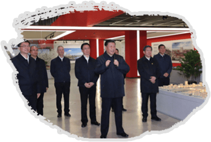
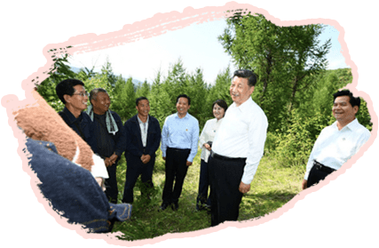
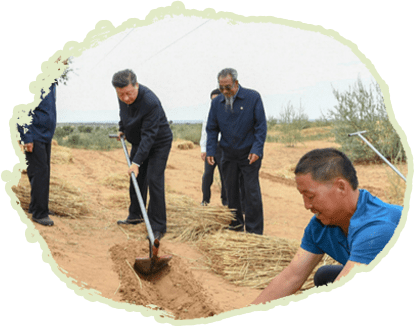

<!DOCTYPE html>
<html lang="zh-CN">

<head>
  <title>{TAG_14226_TAG}</title>
  <!-- 页面的元信息 -->
  <meta http-equiv="content-type" content="text/html; charset=UTF-8" />
  <meta name="viewport" content="width=device-width, initial-scale=1.0, maximum-scale=1.0, minimum-scale=1.0, user-scalable=no" />
  <meta name="format-detection" content="telephone=no, email=no" />
  <meta name="apple-mobile-web-app-capable" content="yes" />
  <meta name="apple-mobile-web-app-status-bar-style" content="white" />
  <meta name="renderer" content="webkit" />
  <meta http-equiv="X-UA-Compatible" content="IE=edge,chrome=1" />
  <meta name="filetype" content="1" />
  <meta name="publishedtype" content="1" />
  <meta name="pagetype" content="2" />
  <meta name="screen-orientation" content="landscape" />
  <meta name="x5-orientation" content="landscape" />
  <meta name="full-screen" content="yes" />
  <meta name="x5-fullscreen" content="true" />
  <meta name="browsermode" content="application" />
  <meta name="x5-page-mode" content="app" />

  <!-- 页面主样式文件 -->
  <link charset="utf-8" rel="stylesheet" href="./static/css/owo.main.pe0rifsldyl.css">

  <!-- 附属css文件 -->
  <link rel="stylesheet" href="./static/css/main.css" charset="utf-8">

</head>

<body>
  <!-- 页面区域 -->
  <!-- 页面[one]-->
  <div class="home owo" template="one">
    <div class="scroll-box">
      <div class="scale-box">
        
        
        
        
        
        
        
        
        
        
        
        
        
        
        
        
        
        
        
        
        <!-- 活动图片-->
        
        
        
        
        
        
        
        
        
        
        
        
        
        
        
        <!-- 月份 -->
        
        
        
        
        
        
        
        
        <!-- 装饰元素-->
        
        
        
        
        
        
        
        
        
        
        
        
        
        
        
        
        
        
        
        
        
        
        
        
        
        
        
        
        
        
        
        
        
        
        
        
        
        
        
        
        <p class="soulless so-74 item-74 lax" data-lax-opacity="(vw*0.1) 0, (vw*1.3) 1">1月16日</p>
        <p class="soulless so-77 item-77 lax" data-lax-opacity="(vw*0.7) 0, (vw*1.7) 1">1月16日</p>
        <p class="soulless so-80 item-80">4月15日</p>
        <p class="soulless so-83 item-83">4月15日</p>
        <p class="soulless so-86 item-86">5月20日</p>
        <p class="soulless so-89 item-89">5月20日</p>
        <p class="soulless so-92 item-92">7月15日</p>
        <p class="soulless so-95 item-95">7月15日</p>
        <p class="soulless so-98 item-98">8月19日</p>
        <p class="soulless so-101 item-101">8月21日</p>
        <p class="soulless so-104 item-104">9月16日</p>
        <p class="soulless so-107 item-107">9月17日</p>
        <p class="soulless so-110 item-110">11月2日</p>
        <p class="soulless so-113 item-113">11月2日</p>
        <p class="soulless so-116 item-116">12月19日</p><!-- 主标题文字-->
        <p class="soulless so-58 item-58">2019习近平地方考察的温情瞬间</p>
        <p class="soulless so-67 item-67">京津冀</p>
        <p class="soulless so-53 item-53">重庆</p>
        <p class="soulless so-45 item-45">江西</p>
        <p class="soulless so-37 item-37">内蒙古</p>
        <p class="soulless so-25 item-25">甘肃</p>
        <p class="soulless so-16 item-16">河南</p>
        <p class="soulless so-10 item-10">上海</p>
        <p class="soulless so-2 item-2">澳门</p>
        <p class="soulless so-60 item-60">  2019年，习近平8次赴地方考察。走基层、进山林、访社区，在雄安，他向铁路建设者致以亲切的问候；在天津，他为社区志愿者们点赞；在重庆，他看望贫困户；在江西，他与苏区的父老乡亲拉家常；在内蒙古，他和护林员亲切交谈；在甘肃，他同莫高窟游客握手问好；在上海，他关切老人用餐；在澳门，他同市民和师生亲切交流。<br></p>
        <p class="soulless so-69 item-69">1月16日至18日，习近平深入河北雄安新区、天津、北京，实地了解京津冀协同发展情况。</p>
        <p class="soulless so-54 item-54">山城四月，春风和煦，山水透绿，一派生机勃勃。<br>4月15日，习近平深入石柱土家族自治县的学校、农村，实地了解脱贫攻坚工作情况。</p>
        <p class="soulless so-47 item-47">5月20日，习近平深入赣州市的企业、农村、革命纪念馆，就经济社会发展进行考察调研，实地了解革命老区脱贫攻坚和推动中部地区。<br>崛起工作进展情况。</p>
        <p class="soulless so-38 item-38">盛夏时节的内蒙古，蓝天白云，水草丰茂。<br>7月15日至16日，习近平深入社区、林场、农村、高校、机关单位，看望慰问各族干部群众，就经济社会发展、生态文明建设进行考察调研，实地指导开展“不忘初心、牢记使命”主题教育。</p>
        <p class="soulless so-26 item-26">初秋的河西走廊，金风送爽，瓜果飘香，祁连雪山和沙漠绿洲相映成辉。8月19日至22日，习近平在甘肃深入文物保护单位、农村、学校、草场林场、革命纪念馆、防洪工程、文化企业等，就经济社会发展和“不忘初心、牢记使命”主题教育情况进行考察调研。</p>
        <p class="soulless so-17 item-17">金秋时节，中原大地洋溢着丰收的喜悦，到处生机盎然。9月16日至18日，习近平在河南先后来到信阳、郑州等地，深入革命老区、农村、企业等，就经济社会发展和“不忘初心、牢记使命”主题教育情况进行考察调研。</p>
        <p class="soulless so-11 item-11">11月2日至3日，习近平深入上海杨浦滨江、古北社区，就贯彻落实党的十九届四中全会精神、城市公共空间规划建设、社区治理和服务等进行调研，同基层干部群众亲切交流。</p>
        <p class="soulless so-3 item-3">12月19日上午，国家主席习近平位于澳门黑沙环的政府综合服务中心和濠江中学附属英才学校，同澳门市民和师生亲切交流。</p>
        <p class="soulless so-73 item-73 lax" data-lax-opacity="(vw*0.1) 0, (vw*1.3) 1">向铁路建设者<br>致以亲切的问候</p>
        <p class="soulless so-76 item-76 lax" data-lax-opacity="(vw*0.7) 0, (vw*1.7) 1">向铁路建设者<br>致以亲切的问候</p>
        <p class="soulless so-79 item-79">嘱咐学校和老师<br>把学生教好、管好</p>
        <p class="soulless so-82 item-82">看望贫困户<br>谭登周一家</p>
        <p class="soulless so-85 item-85">会见红军后代、<br>革命烈士家属代表</p>
        <p class="soulless so-88 item-88">与苏区的父老乡亲拉家常</p>
        <p class="soulless so-91 item-91">深入林场同护林员<br>交流</p>
        <p class="soulless so-94 item-94">到马鞍山村实地<br>了解乡亲们的<br>生产生活情况</p>
        <p class="soulless so-97 item-97">同莫高窟游客<br>握手问好</p>
        <p class="soulless so-100 item-100">实地了解“草方<br>格压沙”作业</p>
        <p class="soulless so-103 item-103">同民宿店店主<br>一家亲切交谈</p>
        <p class="soulless so-106 item-106">实地察看油茶树<br>种植和挂果情况</p>
        <p class="soulless so-109 item-109">同群众亲切交谈</p>
        <p class="soulless so-112 item-112">关切老年人用餐</p>
        <p class="soulless so-115 item-115">亲自给学生上了一堂爱国主义教育课</p>
      </div>
    </div>
    <div class="prop-box-shelter">
      <div class="prop-box"><svg viewBox="0 0 1024 1024" version="1.1" xmlns="http://www.w3.org/2000/svg" p-id="2982" width="32" height="32" o-tap="hideProp">
          <path d="M760.96 195.2L512 444.16 263.04 195.2a48 48 0 0 0-67.84 67.84L444.16 512l-248.96 248.96A48 48 0 0 0 263.04 832L512 579.84 760.96 832A48 48 0 0 0 832 760.96L579.84 512 832 263.04a48 48 0 0 0-67.84-67.84z" p-id="2983" fill="#ffffff"></path>
        </svg>
        <div class="prop">
          <div class="text text-1" style="background-color: #4785b3;">
            <h2>向铁路建设者致以亲切的问候</h2>
            <p>  习近平来到河北雄安新区考察调研，在河北雄安新区规划展示中心，通过大屏幕连线京雄城际铁路雄安站建设工地现场。现场施工人员热烈鼓掌，向总书记问好。<br>  习近平说：“现在是数九寒冬、天寒地冻，但我们的铁路建设者仍然辛勤劳动着。在此，我代表党中央，向你们并通过你们向全国所有的铁路建设者、劳动者们致以亲切的问候和良好的祝愿！”</p>
          </div>
          <div class="text text-2" style="background-color: #4785b3;">
            <h2>向铁路建设者致以亲切的问候</h2>
            <p>  习近平来到河北雄安新区考察调研，在河北雄安新区规划展示中心，通过大屏幕连线京雄城际铁路雄安站建设工地现场。现场施工人员热烈鼓掌，向总书记问好。<br>  习近平说：“现在是数九寒冬、天寒地冻，但我们的铁路建设者仍然辛勤劳动着。在此，我代表党中央，向你们并通过你们向全国所有的铁路建设者、劳动者们致以亲切的问候和良好的祝愿！”</p>
          </div>
          <div class="text text-3" style="background-color: #ff916a;">
            <h2>向铁路建设者致以亲切的问候</h2>
            <p>  习近平来到河北雄安新区考察调研，在河北雄安新区规划展示中心，通过大屏幕连线京雄城际铁路雄安站建设工地现场。现场施工人员热烈鼓掌，向总书记问好。<br>  习近平说：“现在是数九寒冬、天寒地冻，但我们的铁路建设者仍然辛勤劳动着。在此，我代表党中央，向你们并通过你们向全国所有的铁路建设者、劳动者们致以亲切的问候和良好的祝愿！”</p>
          </div>
          <div class="text text-4" style="background-color: #598632;">
            <h2>向铁路建设者致以亲切的问候</h2>
            <p>  习近平来到河北雄安新区考察调研，在河北雄安新区规划展示中心，通过大屏幕连线京雄城际铁路雄安站建设工地现场。现场施工人员热烈鼓掌，向总书记问好。<br>  习近平说：“现在是数九寒冬、天寒地冻，但我们的铁路建设者仍然辛勤劳动着。在此，我代表党中央，向你们并通过你们向全国所有的铁路建设者、劳动者们致以亲切的问候和良好的祝愿！”</p>
          </div>
          <div class="text text-5" style="background-color: #598632;">
            <h2>向铁路建设者致以亲切的问候</h2>
            <p>  习近平来到河北雄安新区考察调研，在河北雄安新区规划展示中心，通过大屏幕连线京雄城际铁路雄安站建设工地现场。现场施工人员热烈鼓掌，向总书记问好。<br>  习近平说：“现在是数九寒冬、天寒地冻，但我们的铁路建设者仍然辛勤劳动着。在此，我代表党中央，向你们并通过你们向全国所有的铁路建设者、劳动者们致以亲切的问候和良好的祝愿！”</p>
          </div>
          <div class="text text-6" style="background-color: #d9402b;">
            <h2>向铁路建设者致以亲切的问候</h2>
            <p>  习近平来到河北雄安新区考察调研，在河北雄安新区规划展示中心，通过大屏幕连线京雄城际铁路雄安站建设工地现场。现场施工人员热烈鼓掌，向总书记问好。<br>  习近平说：“现在是数九寒冬、天寒地冻，但我们的铁路建设者仍然辛勤劳动着。在此，我代表党中央，向你们并通过你们向全国所有的铁路建设者、劳动者们致以亲切的问候和良好的祝愿！”</p>
          </div>
          <div class="text text-7" style="background-color: #d9402b;">
            <h2>向铁路建设者致以亲切的问候</h2>
            <p>  习近平来到河北雄安新区考察调研，在河北雄安新区规划展示中心，通过大屏幕连线京雄城际铁路雄安站建设工地现场。现场施工人员热烈鼓掌，向总书记问好。<br>  习近平说：“现在是数九寒冬、天寒地冻，但我们的铁路建设者仍然辛勤劳动着。在此，我代表党中央，向你们并通过你们向全国所有的铁路建设者、劳动者们致以亲切的问候和良好的祝愿！”</p>
          </div>
          <div class="text text-7" style="background-color: #6f8335;">
            <h2>向铁路建设者致以亲切的问候</h2>
            <p>  习近平来到河北雄安新区考察调研，在河北雄安新区规划展示中心，通过大屏幕连线京雄城际铁路雄安站建设工地现场。现场施工人员热烈鼓掌，向总书记问好。<br>  习近平说：“现在是数九寒冬、天寒地冻，但我们的铁路建设者仍然辛勤劳动着。在此，我代表党中央，向你们并通过你们向全国所有的铁路建设者、劳动者们致以亲切的问候和良好的祝愿！”</p>
          </div>
          <div class="text text-8" style="background-color: #6f8335;">
            <h2>向铁路建设者致以亲切的问候</h2>
            <p>  习近平来到河北雄安新区考察调研，在河北雄安新区规划展示中心，通过大屏幕连线京雄城际铁路雄安站建设工地现场。现场施工人员热烈鼓掌，向总书记问好。<br>  习近平说：“现在是数九寒冬、天寒地冻，但我们的铁路建设者仍然辛勤劳动着。在此，我代表党中央，向你们并通过你们向全国所有的铁路建设者、劳动者们致以亲切的问候和良好的祝愿！”</p>
          </div>
          <div class="text text-9" style="background-color: #b37f31;">
            <h2>向铁路建设者致以亲切的问候</h2>
            <p>  习近平来到河北雄安新区考察调研，在河北雄安新区规划展示中心，通过大屏幕连线京雄城际铁路雄安站建设工地现场。现场施工人员热烈鼓掌，向总书记问好。<br>  习近平说：“现在是数九寒冬、天寒地冻，但我们的铁路建设者仍然辛勤劳动着。在此，我代表党中央，向你们并通过你们向全国所有的铁路建设者、劳动者们致以亲切的问候和良好的祝愿！”</p>
          </div>
          <div class="text text-10" style="background-color: #b37f31;">
            <h2>向铁路建设者致以亲切的问候</h2>
            <p>  习近平来到河北雄安新区考察调研，在河北雄安新区规划展示中心，通过大屏幕连线京雄城际铁路雄安站建设工地现场。现场施工人员热烈鼓掌，向总书记问好。<br>  习近平说：“现在是数九寒冬、天寒地冻，但我们的铁路建设者仍然辛勤劳动着。在此，我代表党中央，向你们并通过你们向全国所有的铁路建设者、劳动者们致以亲切的问候和良好的祝愿！”</p>
          </div>
          <div class="text text-11" style="background-color: #b37f31;">
            <h2>向铁路建设者致以亲切的问候</h2>
            <p>  习近平来到河北雄安新区考察调研，在河北雄安新区规划展示中心，通过大屏幕连线京雄城际铁路雄安站建设工地现场。现场施工人员热烈鼓掌，向总书记问好。<br>  习近平说：“现在是数九寒冬、天寒地冻，但我们的铁路建设者仍然辛勤劳动着。在此，我代表党中央，向你们并通过你们向全国所有的铁路建设者、劳动者们致以亲切的问候和良好的祝愿！”</p>
          </div>
          <div class="text text-12" style="background-color: #b37f31;">
            <h2>向铁路建设者致以亲切的问候</h2>
            <p>  习近平来到河北雄安新区考察调研，在河北雄安新区规划展示中心，通过大屏幕连线京雄城际铁路雄安站建设工地现场。现场施工人员热烈鼓掌，向总书记问好。<br>  习近平说：“现在是数九寒冬、天寒地冻，但我们的铁路建设者仍然辛勤劳动着。在此，我代表党中央，向你们并通过你们向全国所有的铁路建设者、劳动者们致以亲切的问候和良好的祝愿！”</p>
          </div>
          <div class="text text-13" style="background-color: #bd6c2e;">
            <h2>向铁路建设者致以亲切的问候</h2>
            <p>  习近平来到河北雄安新区考察调研，在河北雄安新区规划展示中心，通过大屏幕连线京雄城际铁路雄安站建设工地现场。现场施工人员热烈鼓掌，向总书记问好。<br>  习近平说：“现在是数九寒冬、天寒地冻，但我们的铁路建设者仍然辛勤劳动着。在此，我代表党中央，向你们并通过你们向全国所有的铁路建设者、劳动者们致以亲切的问候和良好的祝愿！”</p>
          </div>
          <div class="text text-14" style="background-color: #337661;">
            <h2>向铁路建设者致以亲切的问候</h2>
            <p>  习近平来到河北雄安新区考察调研，在河北雄安新区规划展示中心，通过大屏幕连线京雄城际铁路雄安站建设工地现场。现场施工人员热烈鼓掌，向总书记问好。<br>  习近平说：“现在是数九寒冬、天寒地冻，但我们的铁路建设者仍然辛勤劳动着。在此，我代表党中央，向你们并通过你们向全国所有的铁路建设者、劳动者们致以亲切的问候和良好的祝愿！”</p>
          </div>
        </div>
      </div>
    </div>
  </div>


  <script src="./static/js/iscroll-lite.js" type="text/javascript" charset="UTF-8"></script>
  <script src="./static/js/lax.js" type="text/javascript" charset="UTF-8"></script>
  <script src="./static/js/main.js" type="text/javascript" charset="UTF-8"></script><!-- 框架script代码 -->
  <!-- 框架script文件 -->
  <script src="./static/js/owo.main.pe0rifsldyl.js" type="text/javascript" charset="UTF-8"></script>
  <script>
    /*
  存储每个页面的函数
  键名：页面名称
  键值：方法列表
*/
    owo.phoneEnter = "null";
    owo.script = {
      "one": {
        "created": function created() {
          var _this = this;

          setTimeout(function() {
            myScroll = new IScroll(_this.$el, {
              bounce: false,
              momentum: false
            });
            myScroll.maxScrollY = parseInt(-maxHeight + window.innerHeight);
            lax.setup(); // init

            var updateLax = function updateLax() {
              lax.update(-myScroll.y);
              window.requestAnimationFrame(updateLax);
            };

            window.requestAnimationFrame(updateLax);
          }, 0);
        },
        "slowScrollTo": function slowScrollTo(num) {
          // 打字音效
          new Audio("./static/resource/click.mp3").play();
          console.log(num / 375 * myScroll.wrapperWidth);
          myScroll.scrollTo(0, -(num / 375) * myScroll.wrapperWidth, 800);
        },
        "showProp": function showProp(classNmae) {
          // 打字音效
          new Audio("./static/resource/click.mp3").play();
          owo.tool.each(owo.query('.prop-box .prop .text'), function(item) {
            item.style.display = 'none';
          });
          setTimeout(function() {
            owo.query('.prop-box-shelter')[0].style.left = '0';
            owo.query('.prop-box-shelter')[0].style.top = '0';
            owo.query('.prop-box .prop .' + classNmae)[0].style.display = 'block';
          }, 0);
        },
        "hideProp": function hideProp(classNmae) {
          owo.query('.prop-box-shelter')[0].style.left = '-100%';
        }
      }
    };
  </script>
</body>

</html>